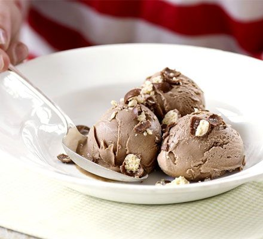

Maltesers and Ice Cream

Description
Maltesers are a perfect pairing for ice cream. Enjoy this simple
but delicious dessert when you need a treat.
Ingredients
- Chocolate ice cream
- Maltesers
- Chocolate syrup
Method
- Smash your maltesers into smaller pieces.
- Scoop ice cream into a bowl and top with smashed Maltesers and
chocolate syrup.
- Enjoy immediately or share with a friend!